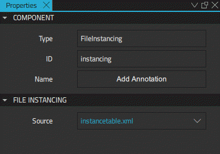
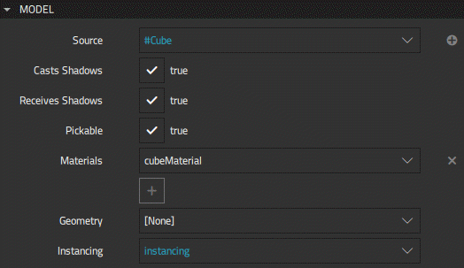
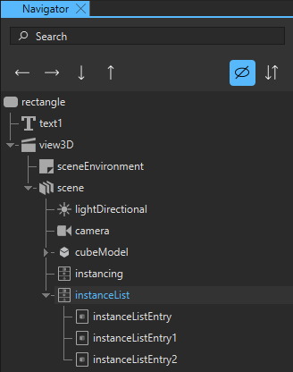
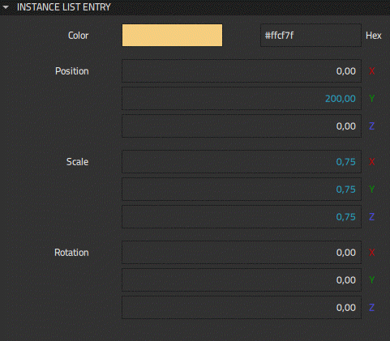

Instanced Rendering
Instancing allows duplicating a model with variations. In contrast to using the Repeater3D component, the model and its graphics resources are only allocated once. The rendering of the duplicated instances is done at a low level by the GPU. Depending on the complexity of the model, this can give a performance improvement of several orders of magnitude.
In practice, instancing is done by defining a table that specifies how each instance is modified relative to the base model.
You can add instancing to your scenes by using the instancing components available in Components > Qt Quick 3D > Qt Quick 3D:
- Instancing
- Instance List
- Instance List Entry.
Reading Instance Tables from Files
The Instancing component makes it possible to read instance tables from files in XML or binary format. The binary file format uses the same layout as the table that is uploaded to the GPU, so it can be directly mapped to memory.
In order to be valid, the XML file must have a top-level instance table element. Each instance is represented by an Instance element inside the InstanceTable. Unknown elements are silently ignored.
An Instance element can have a number of attributes. Color attributes are specified by using SVG color names, such as "red", "green", or "lightsteelblue", or by using a hexadecimal notation. Vector3d and vector4d attributes are specified by a string of space-separated numbers, where missing trailing numbers indicate zeroes. The following attributes are supported: position, scale, eulerRotation, quaternion, custom, and color. For more information about instance tables, see the documentation for the FileInstancing QML type.
To use the Instancing component, drag-and-drop it from Components to Scene in Navigator.
Instancing Properties
Define the location of an XML or a binary file containing the instance data in Properties > File Instancing > Source.

If the file name has a .bin extension, it is assumed to refer to a binary file. Otherwise it is assumed to refer to an XML file. If an XML file foo.xml is specified, and the file foo.xml.bin exists, the binary file foo.xml.bin will be loaded instead.
After defining the Source property for the Instancing component, select a model in Navigator, and in Properties > Model > Instancing, select the name of the Instancing component.

Using Instance Lists to Build Instance Tables
Use the Instance List component to define an instance table in Qt Design Studio. An instance table consists of instances defined as Instance List Entry components, which can have property bindings and animation. This gives great flexibility but also causes memory overhead. Therefore, it is not recommended to use Instance List for procedurally generated tables containing a large number of instances. Also, any property change to an entry will cause the entire instance table to be recalculated and uploaded to the GPU.

To build an instance table:
- Drag-and-drop an Instance List component from Components > Qt Quick 3D > Qt Quick 3D to Scene in Navigator.
- Drag-and-drop Instance List Entry components to the Instance List component to create list items.
- Select the Instance List in Navigator, and in Properties > Instance List > Instances, select each Instance List Entry you wish to include in the Instance List by using the dropdown menu. You can add more fields for the property by clicking the
 icon.
icon. - To define an Instance List Entry, select it in Navigator, and specify its properties in Properties > Instance List Entry.
- Select a model component in Navigator, and in Properties > Instancing, select the name of the Instance List component.
Defining Instance List Entries
Use the Instance List Entry component to specify each instance in an Instance List.
Each of the Instance List Entry properties can have bindings and animation. Select an Instance List Entry in Navigator to specify the properties in Properties > Instance List Entry.

Use the Color property to specify the color for the instance.
Specify the position for the instance using the Position property, and the scale by defining the scale factors of the Scale property along the x, y, and z axes.
Set the rotation for the instance using the Rotation property, which specifies the rotation for the instance as an Euler vector containing the rotation in degrees around the x, y, and z axes.